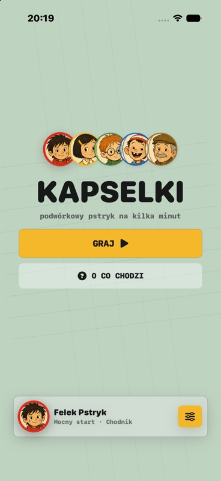
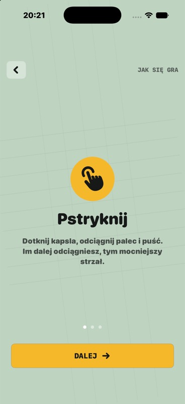
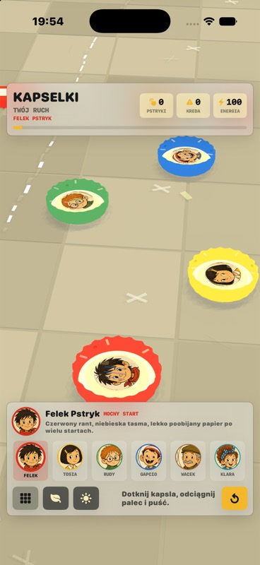
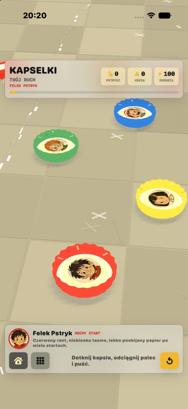
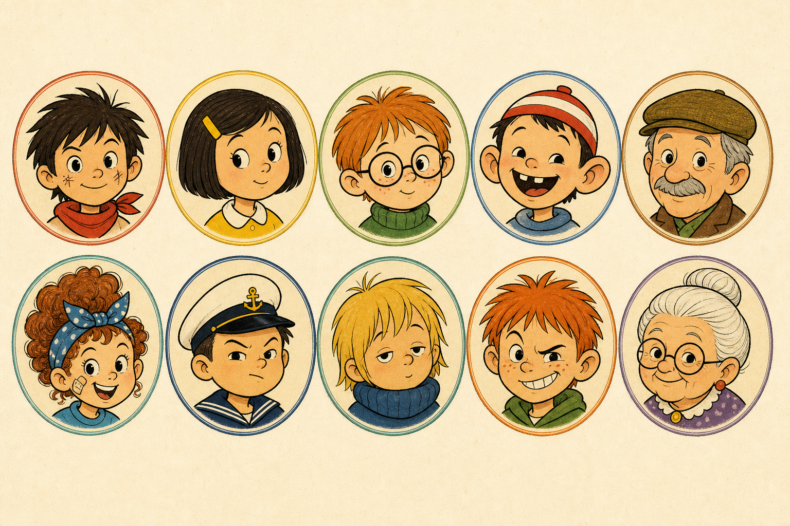

Pstryknij
Dotknij kapsla, odciagnij palec i pusc. Sila strzalu zalezy od tego, jak odwaznie naciagniesz ruch.
iOS prototype
Podworkowy pstryk na kilka minut. Wybierz kapsel, celuj po kredzie i przejedz trase stylem swojej ekipy.
Dotknij kapsla, odciagnij palec i pusc. Sila strzalu zalezy od tego, jak odwaznie naciagniesz ruch.
Jedz miedzy kredowymi krawedziami. Wyjazd poza trase zabiera energie i psuje tempo przejazdu.
Kazda postac ma inny kapsel: mocny start, kontrolowany slizg, spin albo ryzykowne odbicia.
Pierwsze ekrany




Ekipa startowa
Felek Pstryk, Tosia Spryt, Rudy Okular, Gapcio Rakieta, Dziadek Wacek, Klara Bandana, Kapitan Niko, Mietek Sen, Ruda Iskra i Babcia Lola tworza pierwszy zestaw zawodnikow.
Zobacz materialy koncepcyjne